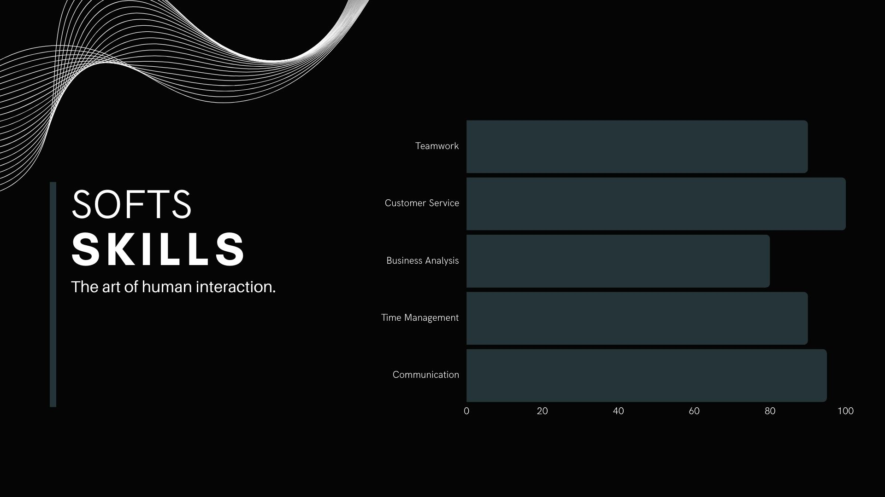

Highly organized and detail oriented with 5+ years of experience in workforce planning, scheduling, and management.
Proven ability to drive organizational success through strategic workforce planning and development.
Expertise in using data and analytics to optimize workforce performance and reduce costs.
My core: Dedicated to exceptional customer service.

Work Experience
Workforce Manager
Concentrix Colombia
Jul 2022 – Oct 2023
Developed and implemented workforce plans that resulted in a reduction in labor costs.
Increased employee productivity by developing and implementing new training and development programs.
Reduced employee turnover by creating and implementing employee engagement initiatives.
Operation Coordinator & Data Analyst
Concentrix Colombia
May 2021 – Jul 2022
Developed and implemented workforce schedules that ensured adequate staffing levels and met operational needs
Coordinated the on-boarding and training of new employees
Created clear and informative visualizations through Power BI and Qlik Sense
Designed and implemented a new office layout that improved workflow and increased efficiency
Operation Supervisor
Concentrix Colombia
Nov 2020 – May 2021
Managed employee records and payroll data.
Analyzed workforce data and trends to identify areas for improvement
Developed and implemented performance management plans for team members
Resolved employee conflicts quickly and effectively
Demonstrated a strong work ethic and dedication to the account, resulting in being promoted to coordinator after 6 months
Financial Analyst
Concentrix Colombia
Jan 2019 – Nov 2020
Reduced billing errors by conducting regular billing audits and identifying AOO
Increased billing efficiency by developing and implementing new procedures through complete automated Excel files
Prepared and presented financial reports to senior management that provided insights into the organization's financial health
Call Center Agent
Concentrix Colombia
Feb 2018 – Jan 2019
Streamlined sales area documentation processes through automation, saving time and resources
I was a top-performing Avianca airline agent, consistently exceeding sales targets
Known as an active participant in corporate initiatives, contributing to company's integration and gender equality goals
Service manager
HCB Gourmet
Mar 2016 – Nov 2017
Learned about inventory management and supplier management
I typified users to identify preferred dishes and optimize kitchen preparation to reduce food waste
Implemented strategies to enhance the lunch experience with faster service, personalized attention and special promotions
Waiter
Holiday Inn Hotel
Mar 2014 – Mar 2016
Gained expertise in wine, beer, spirits, and non-alcoholic drinks to recommend suitable pairings
Improved abilities as paying attention to details, being polite and attentive, and go the extra mile to exceed customer expectations
Learned all menu items, ingredients, and preparation methods to provide accurate information to customers
Publicist and Data Manager
Rosmuc
Apr 2010 – Dec 2012
Implemented a user-friendly documentation system
Oversaw internal and external communication strategies
Designed Infographics and brochures for social programs to be executed in vulnerable communities
Education
I spent three years studying Industrial Engineering, which gave me a solid foundation. But my real learning journey has been outside the classroom. I've loved the freedom to explore different topics and solve problems in my own way. While it can be lonely at times, the satisfaction of mastering a new skill is totally worth it.
Academic Bachelor
Dec 2007
Academic school with emphasis on cutting-edge knowledge
Complete education in English
Teaching of computer tools such as Microsoft Office suite and Adobe. As well as programming
Study of global geopolitics through simulations of the United Nations and its protocols
ICDL Certification
Sep 2007
Designed to build the critical digital skills of the modern workplace: